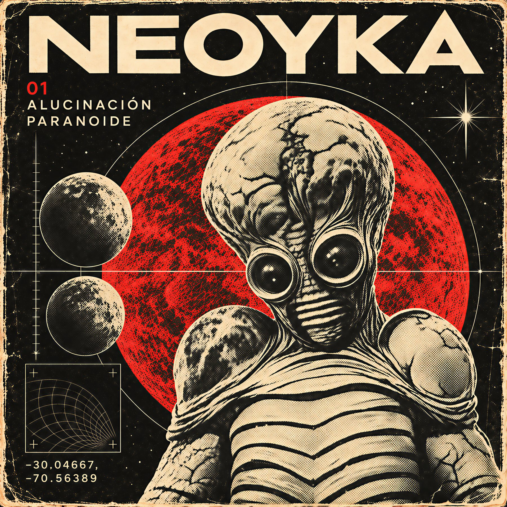
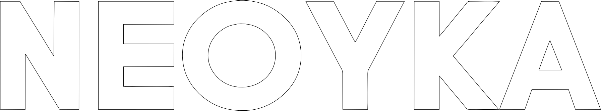
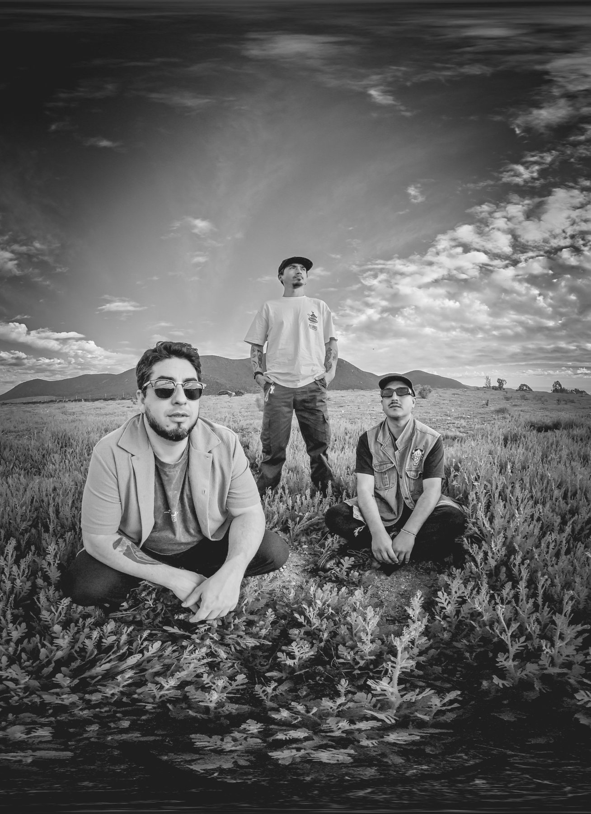
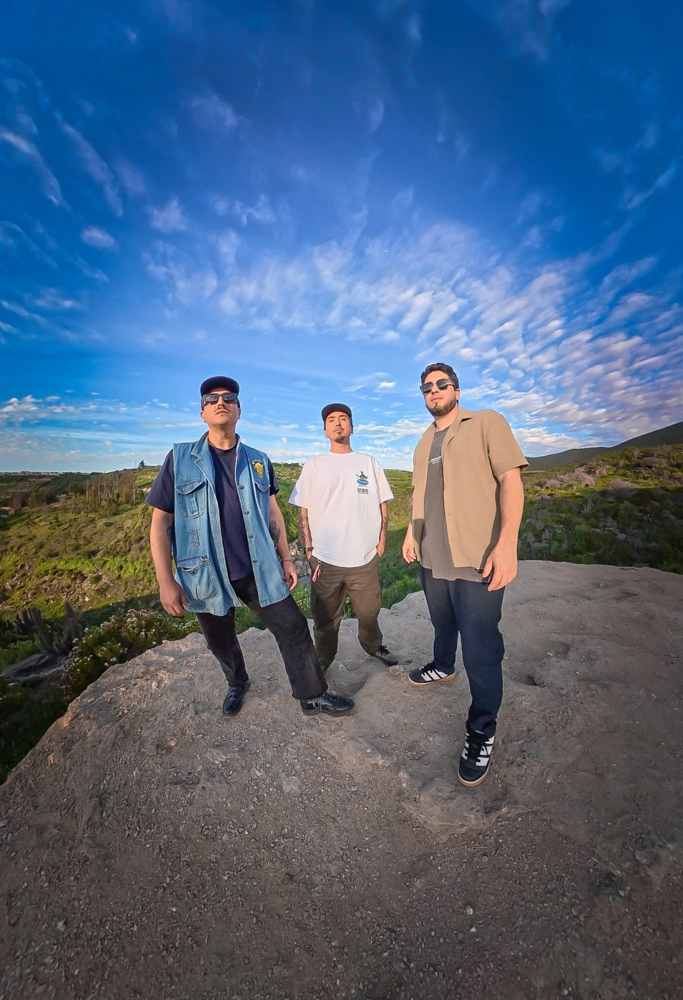
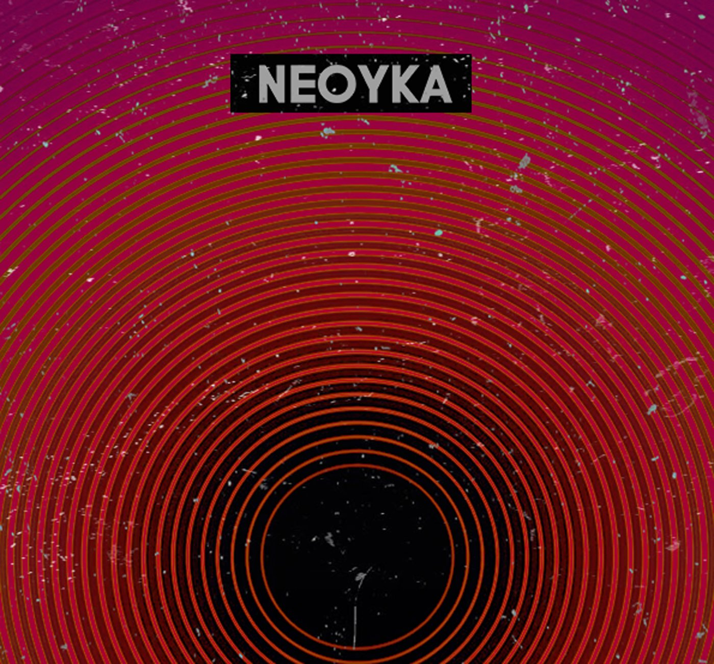
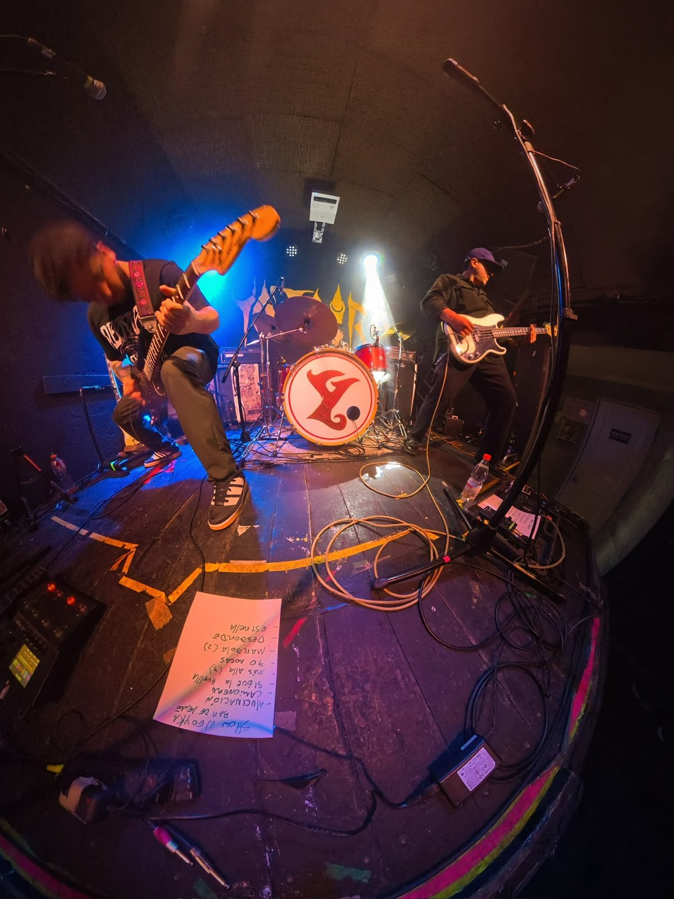
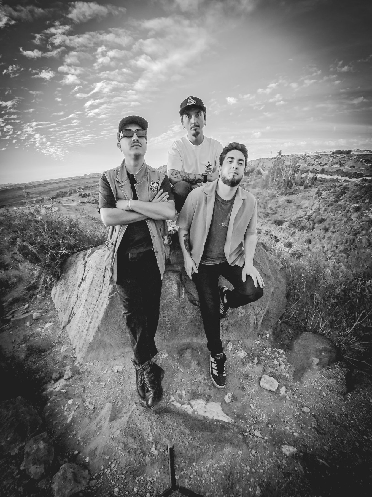
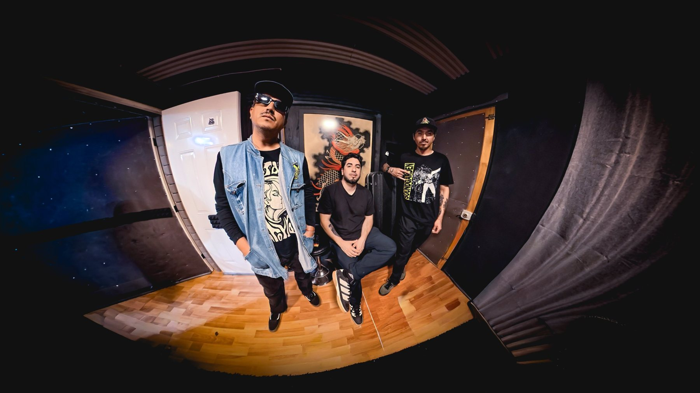

Out nowSingle · REDUX 01Nov 2026

Fuzz, deep distortion and psychedelic weight from the Elqui Valley, under the clearest skies on Earth.

NEOYKA is a heavy rock power trio from La Serena and Coquimbo, Chile. Fuzz-saturated guitars, deep distorted bass and pounding drums build a raw, intense sound that moves between crushing riffs, hypnotic passages and dense psychedelic atmospheres.
Their music carries the vastness of Chile’s coastal semi-desert, the landscapes of the north and the mystique of the Elqui Valley. Forged in the independent circuit of the Coquimbo Region, NEOYKA has built its identity through years of live shows and a constant drive to keep heavy rock powerful and honest.
Their debut album, El Desborde y el Ocaso Vol. II, was recorded entirely on analog tape, capturing the raw, organic energy at the core of the band.
With REDUX, NEOYKA goes back to its roots to give new life to three songs from its earliest recordings: “Alucinación Paranoide”, “Rojo Verde Claro” and “Sigue la Huella”.
Re-recorded with the current line-up, the songs gain new power, depth and weight, keeping the essence of the early years intact while pushing it into the band’s next chapter.
NEOYKA comes from the Elqui Valley, in Chile’s Coquimbo Region: a desert valley between the Andes and the Pacific, under some of the clearest night skies on Earth.
Observatories crown its hills. Locals and travellers speak of strange lights crossing the night, of UFO sightings and of a magnetic energy that has drawn mystics and seekers for decades. That mystique runs through NEOYKA’s sound: heavy, hypnotic and wide open, like the desert at night.


Out now
Three songs from the band’s earliest recordings, re-recorded with the current line-up. Live premiere in La Serena, December 2026.

▶ Watch live on YouTube“Su proyecto ya no se mueve únicamente dentro de los márgenes regionales.”
“The band no longer moves only within regional borders.”
— SONOROCK (CHILE), NOVEMBER 2026 →
